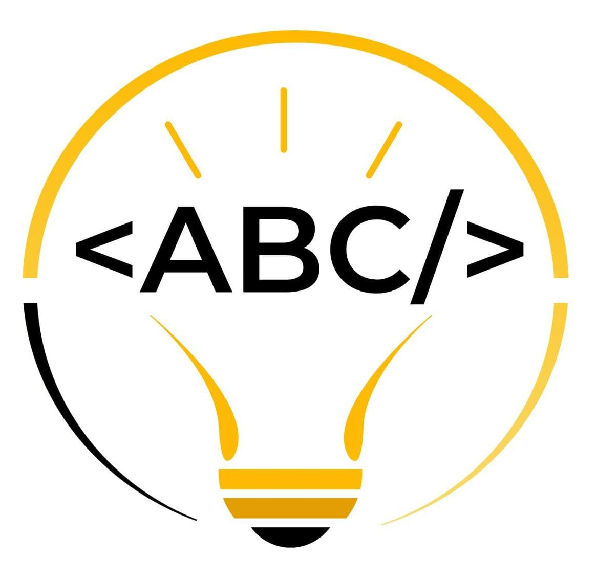

OBI UFABC
Voltar
Central OBI UFABC
Kit do Monitor / Professor
Materiais de apoio prontos para voluntários e professores. Toque para copiar e enviar nos grupos de WhatsApp ou Discord!
-
Aviso: data da Fase 1
Data a confirmar: a Fase 1 da OBI 2026 já aconteceu (27 a 29/05 na Iniciação e 10 a 12/06 na Programação). Preencha abaixo com a data oficial da próxima prova, conferida no calendário da OBI.
Consulte as datas em olimpiada.ic.unicamp.br . -
Links e exercícios de treino
-
Guia: qual é minha categoria?
Abrir o diagnóstico de categoria -
Apoio Institucional da UFABC
Sua escola pública ainda não tem professor cadastrado na OBI? A equipe de extensão da UFABC auxilia no cadastro ou garante o Polo Universitário.
Solicitar apoio para escola pública →